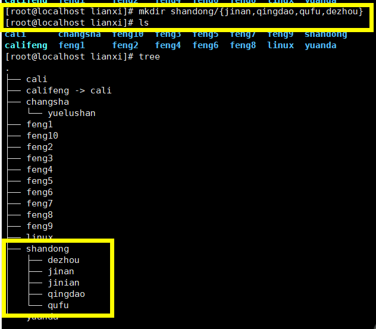

linux基本命令
Linux网络设置
- 桥接bridge:本地连接（有线网卡）、无线网络，，，相当于通过一个交换机通信
- NAT：
- host-only（仅主机模式）：只和真实机器VMnet1通信，不能和其他的主机通信

配置ip地址（临时配置ip,重新启动会使ip地址失效）
- ip address add 192.168.20.24/24 dev eth0 —-》不会覆盖原来的ip地址，一个网卡可以有多个ip,推荐使用
- 给eth0这个网卡配置ip地址192.168.20.24，子网掩码为255.255.255.0
- ifconfig (centos7 使用yum install net-tools)
- 直接ifconfig查看ip地址
- ifconfig eth0 192.168.20.24/24配置ip地址 —》会覆盖原来的ip地址
ip addresss /ip add
- 查看ip地址
- etho0:代表第一块网卡 Ethernet 以太网（局域网)
- etho1:代表第二块网卡
Linux命令的分类
- Linux命令：
- 用户实现某一类功能的指令或程序
- 命令的执行依赖于解释器程序（例如:/bin/bash）
- shell –解释器程序，shell也是程序
- shell是任何机器进行交互的桥梁工具（中间人）
- shell是一类解析程序的统称
- cat /etc/shells —查看Linux中的shell类型
- /bin/sh
/bin/bash —-linux默认的shell(centos ,redhat,ubuntu)
/sbin/nologin
/usr/bin/sh
/usr/bin/bash
/usr/sbin/nologin
- /bin/sh
- 查看Linux中默认的shell类型
- echo $SHELL
- cat /etc/shells —查看Linux中的shell类型
- shell的作用
- 帮助我们在Linux里找到输入的命令
- 帮助执行
- 内核：linux 的内核：Linux系统里最核心的软件
- 内核有什么作用：和硬件打交道
- 对cpu进行调度管理
- 对内存进行分配管理
- 对进程进行管理
- 对磁盘文件系统进行管理
- 对其他硬件进行管理

- shell的工作步骤
- 各种shell的差异？
- 默认情况下：
- bash、sh
- 只要用户登录系统，系统就会给你分一个shell，让你使用，接收用户输入的内容
- 各个shell在功能上有差异：
- 颜色效果
- 命令补齐
- 历史记录
- …
- 默认情况下：
- 退出shell
- exit

- Linux命令的分类
- 内部命令：属于shell解释器的一部分
- shell本身自带的命令，安装shell相关的程序就有，不需要额外安装其他的软件
- 外部命令：独立于shell解释器之外的程序文件
- 需要安装额外的程序
- 内部命令：属于shell解释器的一部分
ping
- 检测两台电脑之间能否通信

- 发现ping不同，查看ip add发现eth0 网卡被禁用
ifup eth0
激活启用网卡eth0，
再就可以配ip地址，ip address add 192.168.20.24/24 dev eth0
ping 192.168.20.23 测试是否可以和192.168.20.23通信
查看系统里的语言编码格式
locale
echo $LANG
查看Linux系统的版本
- cat /etc/redhat-release
ps1
- 含义：第一提示符/主提示符 prompt symbol 1
- [登录用户@主机名 工作目录]
- [] :只是符号
- root :代表登录Linux系统的用户名
- –》root是Linux的超级管理员
- @ :分割符号
- ~：代表你当前所在位置是家目录（宿主目录）
- 家目录：用户登录系统时候，进入的文件夹（目录）
- /root：root 用户的价目在/root目录
- 家目录：用户登录系统时候，进入的文件夹（目录）
- 辅助提示符
- #：代表当前用户是root用户
- $：代表当前登录用户是普通用户
PS2:
第二提示符
<
hostname
查看主机名 hostname
localhost.localdomain —完整的域名
- 机器名有什么用？
- 日常中很多服务器，服务器之间作用又不一样，所以通过给不同的服务器起不同的名字来区分
- 起名字有什么讲究？
- 名.姓
- www.baidu.com 完整的域名（domain）
- baidu.com 是域名 —>需要购买
- www 是这个域里的一个名字 —》具体某台主机的名字
- mail.qq.com —-》DNS域名解析系统 —>IP
- 名.姓
- 机器名有什么用？
临时性设置/修改主机名：
- hostname biubiu 要重新启动系统后才会生效
永久性的修改主机名:
centos 6 中
1.vim /ect/sysconfig/network
—vim是Linux下的文本编辑工具（相当于win下的记事本），在命令行中使用
2.HOSTNAME = changsha.com
3.退出并保存
4.重新启动系统
centOS7（centos7 里修改主机名后立马生效）
- vim /ect/hostname
- 退出并保存
su
- 切换用户
- su - root 切换root用户登录系统
useradd
- 增加普通用户 useradd biubiu
- su - biubiu切换到biubiu用户
exit
- 退出用户
命令行的快捷键
tab
命令的自动补齐功能
文件名的补齐（路径的补齐）
Ctrl+c:
强行终止进程
ctrl+l
清屏
目录操作命令
pwd
- 查看当前所在路径（你当前在哪个文件夹下）
- 选项
- -l
- -P ：显示真正的路径，不要显示链接的路径

linux下的路径/文件系统层次结构（目录采用树结构，倒立的树）
/:根目录
/etc
/usr
- /usr/lib
- /usr/bin
/var
/lib
/bin
/home
- /home/cali
- /home/cali/docs
- /home/cali/pics
- /home/cali/mp3
- /home/bowe
- /home/brad
- /home/cali
/tmp

绝对路径
不考虑当前路径
从/开始的路径，绝对不会搞错的路径
相对路径
参照当前的路径，前进或是后退到目标文件
cd
- cd 是进入文件夹的意思
- cd 是bash内置的命令 man cd 可以查看
- cd ~cali ：进入cali用户的家目录（用户必须存在）
- cd ~：进入当前用户的家目录
- 直接cd 效果等同于cd ~
- cd -:
- 返回到你上一次所在的路径（文件夹）
ls
列出文件夹里的内容 （list）
- 显示蓝色是文件夹
- 黑色的代表是文件
- 红色的代表压缩文件
- 绿色代表可执行文件（可以运行的文件）
- 脚本文件（存放的都是linux命令）
- 粉红色代表图片
- 浅蓝色代表链接文件
选项
-l : 看到文件详细信息
文件类型（-/d）
-:代表文件类型，是普通的文件
d ：代表文件类型 ，是目录
l :链接文件，指向其他文件
c:字符设备文件(输入字符相关的设备)
b:块设备文件（存储数据的设备文件）

rw-r–r–:权限
- r：可读
- w：可写
- x :可执行
root 第一个root代表文件归root用户所有
root 第二个root代表文件归root组所有
-a :显示所有的文件和文件夹（包括隐藏文件）all
- 任何文件夹内都有.和..这两类特殊的隐藏文件
-A:显示所有的文件夹和文件，但不包含.和..文件
-d :显示目录本身的属性
-R:递归显示内容
-h ：以人类能读懂的方式
- byte字节 = 8 bit
- B字节 b 位
- 工业上计算不是1024，而是1000
选项的格式
- 短格式：-l -a —-》推荐使用短格式
- 长格式: –all
- 效果一样
参数
- （参加进来的操作数（操作对象））
- 没有接参数的时候，默认是当前文件夹
mkdir
- 新建文件夹
- man mkdir 查到是user commands
- 选项
- -p :当父文件夹不存在的时候就新建父文件夹
- -p :当父文件夹不存在的时候就新建父文件夹
- mkdir feng{1..10} ：批量创建文件夹
- mkdir shandong/{jinan,qingdao,qufu,dezhou}
- 
rmdir
- 删除空的目录,只能删空文件夹
tree
- 查看文件夹的目录结构
- 原先是没有的，需要yum install tree -y
- tree shangdong/ 查看文件夹shandong下的目录层次结构
- which tree –查询tree存放的路径（已经安装tree命令的机器上）
- /usr/bin/tree
- rpm -qf /usr/bin/tree —查询tree 是哪个安装包安装过来的
tree-1.6.0-10.el7.x86_64- rpm 是红帽的Linux系统的软件管理的命令
安装步骤
- 将镜像光盘放入光驱
- [root@localhost lianxi]# cat /etc/redhat-release —查询当前的系统版本
CentOS Linux release 7.5.1804 (Core)
- [root@localhost lianxi]# cat /etc/redhat-release —查询当前的系统版本
- 挂载镜像文件
- [root@localhost lianxi]# mount /dev/cdrom /mnt
mount: /dev/sr0 写保护，将以只读方式挂载- mount 是挂载（连接）设备的命令
- /dev/cdrom代表光驱
- [root@localhost lianxi]# ll /dev/cdrom —只是一个链接文件sr0
lrwxrwxrwx. 1 root root 3 9月 27 10:22 /dev/cdrom -> sr0
- [root@localhost lianxi]# ll /dev/cdrom —只是一个链接文件sr0
- /mnt挂载目录（挂载点） —相当于win的H、J盘符
- [root@localhost lianxi]# df -Th —查看已经挂载到系统里使用的设备（相当于win打开我的电脑，知道那个分区是否连接到电脑还有使用情况）
- /dev/sr0 iso9660 4.2G 4.2G 0 100% /mnt —表示已经挂载成功，可以使用了
- [root@localhost lianxi]# mount /dev/cdrom /mnt
- 进入挂载目录，找到tree软件包
- [root@localhost Packages]# cd /mnt/Packages/
- redehat Linux里的安装包以.rpm结尾的，win里是以.exe结尾的
- [root@localhost Packages]# ls tree-1.6.0-10.el7.x86_64.rpm
- [root@localhost Packages]# rpm -ivh tree-1.6.0-10.el7.x86_64.rpm
- rpm 是Linux里软件管理（安装、卸载、升级、查询）的命令
- -ivh 代表的含义就是安装 install
du
统计目录以及文件的磁盘空间占用情况
选项
-a:统计时包括所有的文件，不仅仅只是统计目录
-h :以更一度的字节单位（K,M等）显示信息
-s: 只统计每个参数所占空间总的大小
1
2[root@localhost lianxi]# du -sh hello.sh
4.0K hello.sh
格式化的时候这个格子划分了4k的空间，空间没用完du -sh显示也是 4k，所以与wc的 3k字节不同
wc
统计命令，会统计有行数，单词数，字节数
选项
- -c :统计字节数
- -l:统计行数
- -w :统计单词数
1
2[root@localhost lianxi]# wc hello.sh
3 3 18 hello.sh
文件操作命令
touch
- 新建空文件，或是更新文件时间标记
- 当文件不存在的时候，就是新建空文件
- 如果存在就修改文件的时间
- touch feng{1..100}.txt
- 选项
- -a :改变文件的读取时间记录
- -m:改变文件的修改时间记录
- -r ：使用参考文件的时间记录
- -d:设定时间与日期
cp
复制文件或是文件夹（目录）
实例
- 将文件复制到文件夹里
- 将文件夹复制到文件夹
- -r
- 将多个文件夹复制带文件夹中
- cp hello.sh yy.txt huashan/ hengshan/ -r
- 复制粘贴重命名
- [root@localhost huashan]# cp hello.sh hengshan/t.sh
选项
-r :递归的拷贝
-a :保持文件属性不变
cp -i：提醒是否覆盖
避免cp复制文件的时候总是给予覆盖的提醒
- 使用cp命令的绝对路径
1
2
3
4[root@localhost huashan]# which cp
alias cp='cp -i'
/usr/bin/cp
[root@localhost huashan]# /usr/bin/cp hello.sh hengshan
mv
移动文件或目录
- 如果 目标位置与源位置相同，则相当于改名
mv在使用绝对路径的时候，需要考虑文件是否重要
移动文件夹并改名
1
2
3
4[root@localhost huashan]# mv beijing/ wudangshan/jingcheng
[root@localhost huashan]# tree wudangshan/
wudangshan/
└── jingcheng
通配符
- *：匹配任意个字符
- ? ：匹配1个字符
rm
- rm -rf shangdong/ 强制删除shangdong 文件夹里的所有内容
- rm 删除的文件夹和文件不会存放到回收站，直接删除了
- rm -rf * 会删除当前目录下所有的内容
- rm -rf a?? :删除a开头的3位的文件
- rm -rf a* :删除a开头的所有内容
- 所以
- 去使用恢复软件
- 删除东西之前做好备份，不要轻易的删除东西，删除东西之前三思而行
- rm -rf / 千万不能使用
- rm -rf /* 不能使用，会删除根目录下的所有的内容
- 选项
- -r,-R:递归删除，株连九族
- -f :强制删除，不给予提醒
ln
链接文件
- 软链接
- 符号链接=win里的快捷方式
- 文件系统和权限肯定是lrwxrwxrwx
- 命令格式：ln -s 源文件 ..链接文件
- 软链接
选项
- -s 符号
1
2
3
4
5
6
7
8
9[root@localhost linux]# ln -s huashan/ huashanpai
lrwxrwxrwx. 1 root root 8 9月 27 19:47 huashanpai -> huashan/
-rw-r--r--. 1 root root 0 9月 27 19:06 x.txt
[root@localhost linux]# cd huashanpai/
[root@localhost huashanpai]# pwd
/lianxi/linux/huashanpai
[root@localhost huashanpai]# pwd -P
/lianxi/linux/huashan创建链接文件的命令
链接文件：可以给文件夹和文件都创建
链接文件（软链接）相当于win的快捷方式
ln -s helloworld.sh hw.sh —给helloworld.sh创建一个快捷方式
- 源文件 目标文件（快捷）
选项
- -s:符号链接=软链接
- -s:符号链接=软链接
file
查看文件类型
1
2
3
4
5
6
7
8[root@localhost linux]# file /dev/cdrom
/dev/cdrom: symbolic link to `sr0'
[root@localhost linux]# file /dev/sda
/dev/sda: block special
[root@localhost linux]# file /etc/passwd
/etc/passwd: ASCII text
文件内容查看相关命令
cat
- 显示出文件的全部内容
- 连接文件和输出内容到屏幕
- 将2个文件的内容连接合并起来输出显示
- [root@localhost huashan]# cat -n hosts passwd
- 将2个文件的内容连接合并起来输出显示
- 选项
- -n ：显示行号
- 特点
- 缺点：不能分页
- 优点：可以快速的显示所有的内容，可以显示行号；连接多个文件的内容
*tac *
- 从最后一行倒着显示出文件的全部内容
more
- 全屏方式或分页显示文件内容
- 特点：
- 优点：可以分页显示；连接多个文件的内容
- 缺点：不能显示行号
less
- 与more命令相同，但扩展功能更多
- 扩展
- page down,page up实现上下翻页
- 特点：
- 优点：可以分页显示
- 缺点：不能显示行号,不能连接多个文件的内容
想显示行号又想分页显示
1 | [root@localhost huashan]# cat -n messages | more |
|管道符号：
- 作用是将前面命令的输出送给后面命令做输入。借花献佛
- 优势：可以组合多个命令的功能
head
查看文件开头的一部分内容，默认显示前十行
1
2
3
4
5
6
7
8
9
10
11
12
13
14
15
16
17
18
19
20
21
22
23
24
25
26
27
28[root@localhost huashan]# head -n 3 passwd 显示前3行
root:x:0:0:root:/root:/bin/bash
bin:x:1:1:bin:/bin:/sbin/nologin
daemon:x:2:2:daemon:/sbin:/sbin/nologin
[root@localhost huashan]# cat passwd -n | head -20
---显示前20行且显示行号
1 root:x:0:0:root:/root:/bin/bash
2 bin:x:1:1:bin:/bin:/sbin/nologin
3 daemon:x:2:2:daemon:/sbin:/sbin/nologin
4 adm:x:3:4:adm:/var/adm:/sbin/nologin
5 lp:x:4:7:lp:/var/spool/lpd:/sbin/nologin
6 sync:x:5:0:sync:/sbin:/bin/sync
7 shutdown:x:6:0:shutdown:/sbin:/sbin/shutdown
8 halt:x:7:0:halt:/sbin:/sbin/halt
9 mail:x:8:12:mail:/var/spool/mail:/sbin/nologin
10 operator:x:11:0:operator:/root:/sbin/nologin
11 games:x:12:100:games:/usr/games:/sbin/nologin
12 ftp:x:14:50:FTP User:/var/ftp:/sbin/nologin
13 nobody:x:99:99:Nobody:/:/sbin/nologin
14 systemd-network:x:192:192:systemd Network Management:/:/sbin/nologin
15 dbus:x:81:81:System message bus:/:/sbin/nologin
16 polkitd:x:999:998:User for polkitd:/:/sbin/nologin
17 sshd:x:74:74:Privilege-separated SSH:/var/empty/sshd:/sbin/nologin
18 postfix:x:89:89::/var/spool/postfix:/sbin/nologin
19 chrony:x:998:996::/var/lib/chrony:/sbin/nologin
20 mysql:x:27:27:MySQL Server:/var/lib/mysql:/bin/false
[root@localhost huashan]#
tail
查看文件结尾的少部分内容（默认为10行）
tail -n 文件名
1
2
3
4
5
6[root@localhost huashan]# cat -n passwd | tail -5
17 sshd:x:74:74:Privilege-separated SSH:/var/empty/sshd:/sbin/nologin
18 postfix:x:89:89::/var/spool/postfix:/sbin/nologin
19 chrony:x:998:996::/var/lib/chrony:/sbin/nologin
20 mysql:x:27:27:MySQL Server:/var/lib/mysql:/bin/false
21 tss:x:59:59:Account used by the trousers package to sandbox the tcsd daemon:/dev/null:/sbin/nologintail -f = tailf
作用：跟踪文件的末尾的变化 ，一旦有新的内容追加到文件的末尾，马上在屏幕上显示
1
2
3
4[root@localhost huashan]# tailf passwd
[root@localhost huashan]# echo 123456 >>passwd 将1231456输出追加到passwd的末尾
>> ：追加输出重定向，往文件的末尾追加内容，不会替换文件原来的内容
tail -n +3
从文件的第三行开始显示到末尾
1
2
3
4
5
6
7
8
9
10
11
12
13
14
15
16
17
18
19
20
21[root@localhost huashan]# cat -n passwd |tail -n +3
3 daemon:x:2:2:daemon:/sbin:/sbin/nologin
4 adm:x:3:4:adm:/var/adm:/sbin/nologin
5 lp:x:4:7:lp:/var/spool/lpd:/sbin/nologin
6 sync:x:5:0:sync:/sbin:/bin/sync
7 shutdown:x:6:0:shutdown:/sbin:/sbin/shutdown
8 halt:x:7:0:halt:/sbin:/sbin/halt
9 mail:x:8:12:mail:/var/spool/mail:/sbin/nologin
10 operator:x:11:0:operator:/root:/sbin/nologin
11 games:x:12:100:games:/usr/games:/sbin/nologin
12 ftp:x:14:50:FTP User:/var/ftp:/sbin/nologin
13 nobody:x:99:99:Nobody:/:/sbin/nologin
14 systemd-network:x:192:192:systemd Network Management:/:/sbin/nologin
15 dbus:x:81:81:System message bus:/:/sbin/nologin
16 polkitd:x:999:998:User for polkitd:/:/sbin/nologin
17 sshd:x:74:74:Privilege-separated SSH:/var/empty/sshd:/sbin/nologin
18 postfix:x:89:89::/var/spool/postfix:/sbin/nologin
19 chrony:x:998:996::/var/lib/chrony:/sbin/nologin
20 mysql:x:27:27:MySQL Server:/var/lib/mysql:/bin/false
21 tss:x:59:59:Account used by the trousers package to sandbox the tcsd daemon:/dev/null:/sbin/nologin
22 1234561
2
3
4
5
6[root@localhost huashan]# w|tail -n +2
从第二行开始显示登录Linux系统的用户到末尾
USER TTY FROM LOGIN@ IDLE JCPU PCPU WHAT
root tty1 10:23 10:06m 0.02s 0.02s -bash
root pts/0 192.168.0.14 15:52 5.00s 0.76s 0.00s w
root pts/1 192.168.0.14 20:33 8:53 0.08s 0.08s -bash
综合
1 | [root@localhost huashan]# cat -n passwd | head -6 |tail -3 显示4-6行 |
文件查找命令
history
显示最近使用的1000条命令
使用历史命令：方便，省事
1
2
3
4[root@localhost ~]# !381 执行第381条命令
helloworld
hello world
i am hu[root@localhost ~]#1
2
3[root@localhost shandong]# !ls ---执行以ls开头的最近的命令
ls jinan
biu
which
查找可执行文件并显示所在的位置
- ——搜索范围由PATH环境变量指定的目录里查找
- which ls,which mkdir
- which cd 没有找到cd命令的路径,
- cd是shell内部命令，因此查不到对应的文件
- man cd 查询cd命令的使用手册
- BASH_BUILTINS(1)
- cd是shell内部命令，因此查不到对应的文件
/bin 存放二进制可执行文件
- ls mkdir —>c语言 —》编译 —-》二进制 机器 1 0
PATH:Linux系统里一个非常重要的环境变量
环境变量：Linux系统里很多用户和程序都需要用到的变量
1
2
3
4
5
6
7[root@localhost shandong]# env ---查看当前Linux系统的环境变量
XDG_SESSION_ID=10
HOSTNAME=localhost.localdomain
SELINUX_ROLE_REQUESTED=
TERM=xterm
SHELL=/bin/bash
HISTSIZE=1000
1
2
3
4
5
6[root@localhost shandong]# echo $PATH
/usr/local/sbin:/usr/local/bin:/usr/sbin:/usr/bin:/root/bin
[root@localhost shandong]# dbfhbf 查找不到命令，也是因为PATH变量的目录里都没有这个命令
-bash: dbfhbf: 未找到命令
[root@localhost shandong]#

whereis
- 查找文件的路径、该文件的帮助文件路径，原理和which类似
- 查找命令或是程序
总结：
which和whereis 都是用来查找Linux系统里命名存放在哪里，到PATH变量指定的目录里去查找
locate
配合每天更新的数据库（/var/lib/mlocate）查看文件位置,速度快。
locate *.jpg:查看所有以.jpg结尾的文件
- :通配所有字符
centos7 中查找不到locate命令
- 安装mlocate包
- yum install mlocate
- 更新数据库
- updatedb
- 安装mlocate包
查找
精确查找 —find
模糊查找 —locate是模糊查找
1
2
3
4
5
6
7[root@localhost ~]# locate mkdir
/usr/bin/mkdir
/usr/share/aclocal-1.13/mkdirp.m4
/usr/share/man/man1/mkdir.1.gz
/usr/share/systemtap/tapset/linux/sysc_mkdir.stp
/usr/share/systemtap/tapset/linux/sysc_mkdirat.stp
[root@localhost ~]#1
2
3[root@localhost ~]# cd /var/lib/mlocate
[root@localhost mlocate]# ls
mlocate.db/var/lib/mlocate/mlocate mkdir作用
此数据库文件里将Linux根目录下所有的文件和文件夹建立了一个索引，如果我们使用locate命令去查找文件的时候，她直接到数据库文件/mlocate.db里查找，不去根目录下查找，就会比较快。
手动更新数据库updatedb
- 要想locate查找的新文件，需要updatedb一下
总结
- 优点：locate命令查找文件快、模糊查找—》查找范围：linux根目录
- 缺点：新文件查找不到，需要手动updatedb更新数据库
helloworld.sh案例使用
1.vim helloworld.sh文件
1 | echo "hello world" |
2.执行脚本
[root@localhost lianxi]# bash helloword.sh
hello world
hhhh 3.复制helloword.sh到/bin就不需要改变PATH变量的值
[root@localhost lianxi]# ll helloword.sh ---无可执行权限
-rw-r--r--. 1 root root 31 9月 28 10:22 helloword.sh
[root@localhost lianxi]# cp helloword.sh /bin 将helloword.sh 拷贝到/bin下
[root@localhost lianxi]# which helloword.sh 居然查找不到helloword.sh
/usr/bin/which: no helloword.sh in (/usr/local/sbin:/usr/local/bin:/usr/sbin:/usr/bin:/root/bin)
[root@localhost lianxi]# chmod +x /bin/helloword.sh 给/bin/helloword.sh加上权限x可执行
[root@localhost lianxi]# which helloword.sh 现在能查找到helloword.sh了
/usr/bin/helloword.sh
[root@localhost lianxi]# 4.给helloword.sh加上软链接，让系统查找到你的helloword程序
1 | [root@localhost bin]# ln -s helloword.sh helloword |
要想让Linux系统查找到你的helloword.sh程序？
1.将程序复制到PATH变量的某个目录下，例如:/bin目录
[root@localhost bin]# echo $PATH
/usr/local/sbin:/usr/local/bin:/usr/sbin:/usr/bin:/root/bin 2.修改PATH变量的值
1 | [root@localhost bin]# PATH=$PATH:/lianxi |
path
环境变量
find
精确查找
用于查找文件或是目录
格式 find 查找范围 查找条件 动作
常用查找条件
-name :按文件名称查找
1
2[root@localhost lianxi]# find / -name helloword
/usr/bin/helloword
-iname:按文件名称查找，不区分大小写
1
2[root@localhost lianxi]# find / -iname helloword
/usr/bin/helloword
-size:按文件的大小查找
10k： 文件刚好是10k的大小
1
[root@localhost lianxi]# find / -size 10k
+10k: 大于10k的文件
1
[root@localhost lianxi]# find / -size +10k
-10k :小于10k的文件
1
[root@localhost lianxi]# find / -size -10k
-type:按文件类型查找
- f 普通文件
- d 目录（文件夹）
- c 字符设备
- b 块设备
- l 链接文件
- p 管道
- s socket
-mtime:按文件更新时间查找
- find /usr/ -mtime 4 表示4天前那一天
- find /usr -mtime -4 表示4天内
- find /usr -mtime +4 表示4天前
-mmin 表示分钟
-user ：根据用户来进行查找
-group:根据组来查找
特殊查找条件
- -o :逻辑或，只要有一个满足就满足
- -not :逻辑非
- -a :逻辑与，系统默认是与，可不加
常用动作
-exec :将find查找的结果交给exec后面的命令执行
1
2
3
4
5
6
7
8
9- [root@localhost lianxi]# cp /etc/hosts .
- [root@localhost lianxi]# mkdir /backups
[root@localhost lianxi]# find . -name hosts -type f -exec cp {} /backups \;
{}用来存放find命令查找到的结果
---》相当于一个容器，用来存放前面find命令查找出来的结果
/backups 目的文件夹
\; 这条命令的结束符号
[root@localhost lianxi]# ls /backups/
hosts
-ok:比-exec动作多了一个确认
文件压缩与解压缩
zip
制作压缩文件
1
2
3
4[root@localhost lianxi]# zip passwd.zip passwd
打包成的文件 源文件
adding: passwd (deflated 56%)
[root@localhost lianxi]#win下winrar是需要额外安装的，zip是默认支持的
unzip
解压缩文件
1
2
3
4
5
6
7
8
9
10
11
12[root@localhost lianxi]# mkdir backup
[root@localhost lianxi]# cp passwd.zip backup/
[root@localhost lianxi]# cd backup/
[root@localhost backup]# ls
passwd.zip
[root@localhost backup]# uzip passwd.zip
-bash: uzip: 未找到命令
[root@localhost backup]# unzip passwd.zip
Archive: passwd.zip
inflating: passwd
[root@localhost backup]# ls
passwd passwd.zip压缩文件= 归档文件Archive
gzip
gzip passwd 直接在源文件上打包，不另外创建一个新的压缩文件
解压缩是gunzip passwd.gz
1
2
3
4
5
6
7[root@localhost backup]# gzip passwd
[root@localhost backup]# ls
passwd.gz passwd.zip
[root@localhost backup]# gunzip passwd.gz
[root@localhost backup]# ls
passwd passwd.zip
[root@localhost backup]#只能给文件打压缩包，不能给文件夹
- gzip –>扩展名 .gz —>zcat 解压 —》gunzip或是gzip -d
- bazip —>扩展名 .bz2 —>bzcat 解压 –》bunzip2或是bzip2 -d
- xz —->扩展名 .xz 解压 —》unxz—->压缩
bzip2
制作压缩文件、解开压缩文件
格式 bzip [-9] 文件名
- bzip -d .bz2 格式的压缩文件
bcat 查看.bz2的压缩文件
1
2
3
4
5
6
7
8
9[root@localhost backup]# bzip2 passwd
[root@localhost backup]# ls
passwd.bz2 passwd.zip
[root@localhost backup]# bzip -d passwd.bz2
-bash: bzip: 未找到命令
[root@localhost backup]# bzip2 -d passwd.bz2
[root@localhost backup]# ls
passwd passwd.zip
[root@localhost backup]#
rar
- 默认情况下，win里的.rar的压缩包在Linux下解压不了，需要安装Linux下的rar软件去解压
- zip格式在Linux和win里都是默认支持的
tar
制作归档文件，释放归档文件
源码 —》内核kernel—>c—》功能多，多个文件—》1个
- 归档文件：把很多东西放到一个文件里
- 压缩文件：使用压缩工具软件，对文件进行压缩，让文件的占用空间变小
格式：tar 【选项】…归档文件名 源文件或目录
命令
- -v :输出详细信息
- -c :创建 .tar格式的包文件
- -x :解开.tar格式的包文件
- -f :表示使用归档文件
- -t:列表查看原来的包内文件
tar —>xz ,gzip,bizp2
新建压缩包
1
2
3
4
5
6-czvf ---->tar.gz
[root@localhost backup2]# tar -czvf passwd.tar.gz passwd
passwd
[root@localhost backup2]# ls
passwd passwd.tar.gz
[root@localhost backup2]#1
2
3
4
5-cjvf ----tar.bz2
[root@localhost backup2]# tar -cjvf passwd.tar.bz2 passwd
passwd
[root@localhost backup2]# ls
passwd passwd.tar.bz2 passwd.tar.gz1
2
3
4
5
6-cJvf --->tar.xz
[root@localhost backup2]# tar -cJvf passwd.xz passwd
passwd
[root@localhost backup2]# ls
passwd passwd.tar.bz2 passwd.tar.gz passwd.xz
[root@localhost backup2]#
解压文件
- -xf 是解压文件
- 不论是.tar,gz 还是.tar.bz2都可以解压
- 解压后替换原来存在的文件
- 创建压缩文件的时候，也会替换原来的压缩文件
- 默认情况下，解压文件会解压到当前文件夹下
- -C 指定解压的路径
- 创建压缩文件时不使用-C，使用绝对路径
- -xf 是解压文件
查看压缩文件
- -tf 选项可以查看所有格式的压缩文件
- .tar.gz
- .tar.bz2
- .tar.xz
yum
Linux下安装软件的工具，能很好的解决软件之间的依赖关系。
安装软件
- yum install A
搭建本地yum 源的步骤
挂载镜像文件到/yum,需要将镜像文件放入光驱
1
2
3
4
5
6
7
8
9
10
11
12
13
14- [root@localhost huashan]# mkdir /yum
- [root@localhost huashan]# cat /etc/redhat-release
CentOS Linux release 7.5.1804 (Core)
-[root@localhost huashan]# mount /dev/cdrom /yum 挂载镜像文件到/yum挂载点目录
- [root@localhost huashan]# df 查看挂载情况
文件系统 1K-块 已用 可用 已用% 挂载点
/dev/mapper/centos-root 17811456 5795200 12016256 33% /
devtmpfs 920384 0 920384 0% /dev
tmpfs 932652 0 932652 0% /dev/shm
tmpfs 932652 9776 922876 2% /run
tmpfs 932652 0 932652 0% /sys/fs/cgroup
/dev/sda1 1038336 145252 893084 14% /boot
tmpfs 186532 0 186532 0% /run/user/0
/dev/sr0 4364408 4364408 0 100% /mnt修改yum的配置文件
1
2
3
4
5
6
7
8
9
10
11
12
13
14
15
16
17
18[root@localhost huashan]# cd /etc/yum.repos.d/
[root@localhost yum.repos.d]# ls
CentOS-Base.repo CentOS-Debuginfo.repo CentOS-Media.repo CentOS-Vault.repo
CentOS-CR.repo CentOS-fasttrack.repo CentOS-Sources.repo mysql.repo
[root@localhost yum.repos.d]# mkdir bak
[root@localhost yum.repos.d]# mv CentOS-* bak
[root@localhost yum.repos.d]# ls
bak mysql.repo
[root@localhost yum.repos.d]# vim local.repo
[root@localhost yum.repos.d]# ls
bak local.repo mysql.repo
[root@localhost yum.repos.d]# cat local.repo
[local_yum]
name=local yum
baseurl=file:///yum
enabled=1
gpgcheck=0
[root@localhost yum.repos.d]#安装gcc
1
[root@localhost yum.repos.d]# yum install gcc
gcc
gcc是c和c++编译器
本地yum的搭建 -》安装gcc
gcc ->很多其他的软件包
1
2
3
4
5
6
7
8
9
10
11
12|[root@localhost lianxi]# vim helloworld.c
[root@localhost lianxi]# gcc -o helloworld helloworld.c 编译输出
[root@localhost lianxi]# ls
cali changsha feng10 feng3 feng5 feng7 feng9 helloworld linux yuanda
califeng feng1 feng2 feng4 feng6 feng8 hello.sh helloworld.c shandong
[root@localhost lianxi]# file hello
hello: cannot open (No such file or directory)
[root@localhost lianxi]# file helloworld
helloworld: ELF 64-bit LSB executable, x86-64, version 1 (SYSV), dynamically linked (uses shared libs), for GNU/Linux 2.6.32, BuildID[sha1]=7320675adfd0ef1d905ad6388a0e8b1f17bd2d9c, not stripped
[root@localhost lianxi]# ./helloworld 执行文件
hello world
i am hu1
2
3
4
5
6
7
8[root@localhost lianxi]# cp helloworld /bin
[root@localhost lianxi]# which helloworld 复制到/bin目录下
/usr/bin/helloworld
[root@localhost lianxi]#
[root@localhost ~]# helloworld
hello world
i am hu[root@localhost ~]#helloworld.c —–>gcc——>helloworld——>PATH变量
ls 、mkdir别人写的程序
helloworld 是自己写的程序
bash —>shell—->PATH
w
查看当前有哪些用户登录到Linux系统以及他们的行为
1
2
3
4
5
6[root@localhost huashan]# w
20:43:30 up 9:44, 3 users, load average: 0.00, 0.01, 0.05
USER TTY FROM LOGIN@ IDLE JCPU PCPU WHAT
root tty1 10:23 10:06m 0.02s 0.02s -bash
root pts/0 192.168.0.14 15:52 2.00s 0.75s 0.01s w
root pts/1 192.168.0.14 20:33 8:18 0.08s 0.08s -bash详解
- 20:43:30 up 当前时间
- 9:44 ：开机了多少时间
- 3 users ：有多少个用户
- load average: 0.00, 0.01, 0.05 平均负载，分别是每分钟平均负载，5分钟平均负载，15分钟平均负载。如果每分钟负载是0.32即平均每分钟有0.32个任务在占用cpu，这个数值的大小根据cpu的核数决定的，每分钟负载不超过cpu核数就不算高。
- 表示单位时间里cpu就绪队列的进程数量，如果这个值超过1，说明cpu不闲，使用率100%。如果值在5以内说明非常忙，超过5就特别忙
- 查看cpu核数的命令：
1
cat /proc/cpuinfo |grep processor |wc -l
User：登录用户名
TTY：登录后系统分配的终端号
From：远程主机名，即从哪登录的
login@：何时登录
IDLE：用户空闲时间。这是个计时器，一旦用户执行任何操作，改计时器就会被重置。
JCPU：和终端连接的所有进程占用时间。包括当前正在运行的后台作业占用时间
PCPU：当前进程所占用时间
WHAT：当前正在运行进程的命令行
w命令区别于其他命令
1 | 1) 区别于who命令，w命令不仅可以看到登录服务器的用户信息，而且可以看到这些用户做了什么 |
man 命令
- 查询命令的使用手册
rpm -qf /bin/mkdir
- 通过rpm命令查询/bin/mkdir命令是通过哪个软件安装过来的
id
- 查看当前登录用户的信息
*chmod *
- chmod +x helloworld.sh –授予文件可执行权限
bash
- bash helloworld.sh 执行脚本
- ./helloworld.sh 执行脚本
别名
别名的作用：方便记忆和使用，提升效果
alias
- 查看系统里的别名

- alias ll=’ls -l –color=auto’
- ll 是别名，是用户自定义的名字，可以不是系统里的命令，建议不要和系统里的命令重复 ,不然会导致原来系统里的命令不可用使用
- ls -l –color=auto 系统里的真正命令
- 设置别名 （临时有效，重启启动系统后会失效）
- alias c=’clear’ —定义c是clear的别名
- alias mm=’mkdir’
unalias
- 取消别名
- unalias c
- 查看系统里的别名
如何让别名永久有效？
- vim /root/.bashrc 或是 vim ~/.bashrc
- alias mv=’mv -i’
- 使修改后的别名定义文件生效
- source ~/.bashrc —执行刚刚修改的定义别名的脚本文件
- 用户重新登录
- 重新启动系统
- source ~/.bashrc —执行刚刚修改的定义别名的脚本文件
date
- 查看当前系统的时间